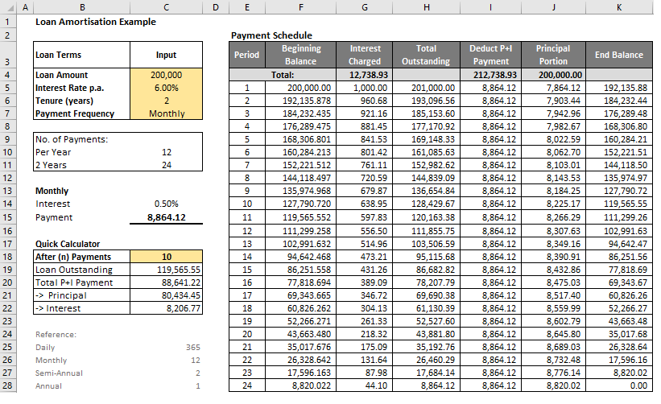

Understanding the loan amortisation schedule helps you to understand bond amortisation.
An amortisation schedule shows the repayment details of a loan which is to be paid off through a series of equal and regular payments. A typical schedule consists of principal balance, payment amount and interest/principal breakdown for each period until maturity.
To create an amortisation schedule, you need the loan amount, annual rate of interest, the number of payment periods that it takes to pay off the loan and the periodic payment amount.
A schedule can be built using two methods. The first method first determines the fixed periodic amount using the PMT function. Then, starting with the original loan amount, interest rate and periodic amount, the values of other variables in the schedule are built using simple arithmetic formulas. I prefer this method because it is more comprehensible and allows for flexibility in varying payments and rates at any time during the life of the loan. For example, if you plan to use the schedule to track your loan balances accurately, modifying it to account for “non-regular” transactions1 is a lot easier since any adjustments made to that period flow to the remaining periods.
(1generally, add a new column if miscellaneous transactions fall on regular payment dates, and split the period to re-calculate interest if transactions fall outside regular due dates.)
The second method uses built-in financial functions provided by Excel. These functions can be used to compute each variable independently for any period, allowing you to design a single-period calculator or a multi-period schedule (full or partial).
| Excel Function | Calculates |
|---|---|
| PMT | fixed periodic payment |
| FV | principal balance at any specific period |
| IPMT | interest portion of the fixed payment at any specific period |
| PPMT | principal portion of the fixed payment at any specific period |
| CUMIPMT | cumulative interest payment between a start period and an end period |
| CUMPRINC | cumulative principal payment between a start period and an end period |

The objective is to create a data frame that contains the same information as the one created using a spreadsheet. There are several methods to create a simple loan amortisation schedule in R.
The most common method is using the loop function that calculates and populate all variables one row at a time until the maximum period has been reached. The logic is similar to creating a schedule in Excel where one variable references another variable in the same time period or row, and next row is dependent on the results of the preceding row. Then the iteration is repeated until the last row.
The second method attempts to calculate, as much as possible, each variable independently of other variables. For example, given the inputs in the function arguments, you can calculate using a single formula what the loan balance is on a specific period, without needing to know what the prior period balance is or the principal portion of the payment. The second method is probably not ideal, and far less flexible than the first method. However, it works well if you have hundreds or thousands of loan positions and you do not want to create a full schedule for each of them. The first method works well if you want to add more variables like fees, prepayment or change in interest rates. But these are just simple models for you to explore if you are building a simple schedule (read up about vectorisation vs loop).
loan = Initial Loan Amount
months = Total number of months
rate = Interest rate per year
Click the button on the right to display the code.
schedule1 <- function(loan, months, rate) {
r <- rate/12
payment <<- loan*r*(1+r)^(months)/((1+r)^(months)-1)
Begin_Balance = Interest = Total = Payment = Principal = Outstanding = vector("numeric", months)
loan_outstanding = loan
for (i in 1:months) {
loan_b_balance = loan_outstanding
loan_interest = loan_outstanding * r
loan_total = loan_b_balance + loan_interest
loan_payment = payment
loan_principal = loan_payment - loan_interest
loan_outstanding = loan_outstanding - loan_principal
Begin_Balance[i] = loan_b_balance
Interest[i] = loan_interest
Total[i] = loan_total
Payment[i] = loan_payment
Principal[i] = loan_principal
Outstanding[i] = loan_outstanding
schedule1_df <<- data.frame(Months = 1:months, Begin_Balance, Interest, Total, Payment,
Principal, Outstanding)
}
}
schedule1(200000,24,0.06)
datatable(schedule1_df, rownames = FALSE, options = list(
searching = FALSE,
pageLength = 30,
lengthMenu = c(10,20,30)
)) %>%
formatRound(c('Begin_Balance', 'Interest', 'Total', 'Payment', 'Principal','Outstanding'), 2)
# This is alternative code for below code. Its; the same, but less neat
loan_int = loan_prin = loan_outstanding = vector("numeric", 24)
for (i in 1:24) {
loan_outstanding[i] = 200000
loan_int[i] = {if(i==1) loan_outstanding[i] * 0.005
else loan_outstanding[i-1] * 0.005}
loan_prin[i] = 8864.12 - loan_int[i]
loan_outstanding[i] = {if(i==1) loan_outstanding[i] - loan_prin[i]
else loan_outstanding[i-1] - loan_prin[i]}
#loan_int[i] = loan_int
#loan_prin[i] = loan_prin
#loan_outstanding[i] = loan_outstanding
}
loan_int
loan_prin
loan_outstanding
As before, the following information and formulas need to be established in R, we will put these together within a function with four parameters: function (Loan, Rate, Years, Freq)
| No. | Assigned Name | Description | Formula |
|---|---|---|---|
| 1 | n | Total number of periods | Years * Freq |
| 2 | r | Interest rate per period | Rate / Freq |
| 3 | pmt | Periodic Payment | Perdiodic payment formula |
| 5 | ppmt | Principal portion of payment | Period 1 increases at a rate of (1+r) |
| 6 | ppmtc | Cumulative principal | Cumulative sum of ppmt |
| 7 | ipmt | Interest portion of payment | Period 1 Interest less incremental value of ppmt from period 1 |
| 8 | pbal | Principal balance of loan | Future value of Loan and pmt |
Click the button on the right to display the code.
# Create a function to calculate payment variables
schedule2 <- function(Loan, Rate, Years, Freq){
n <- Years*Freq
r <- Rate/Freq
period <<- 1:n
pmt <<- Loan*r*(1+r)^(n)/((1+r)^(n)-1)
ppmt <<- (pmt-(Loan*r))*(1+r)^(0:(n-1))
ppmtc <<- cumsum(ppmt)
ipmt <<- (Loan * r) - (pmt-(Loan*r))*((1+r)^(0:(n-1))-1)
pbal <<- Loan*(1+r)^(1:n) - pmt/r*((1+r)^(1:n)-1)
}
schedule2(200000, 0.06, 2, 12)
loan_schedule2 <- data.frame( Month = period,
Payment = pmt,
Interest = ipmt,
Principal = ppmt,
Cumulative_Principal = ppmtc,
Balance = pbal)
datatable(loan_schedule2, rownames = FALSE, options = list(
searching = FALSE,
pageLength = 30,
lengthMenu = c(10,20,30)
)) %>%
formatRound(c('Payment', 'Interest', 'Principal','Cumulative_Principal', 'Balance'), 2)
# Question: why does it stop at 24 rows?
# Answer: As long as any one of the variables produces n number of rows.
# The others will follow. In this case, 0:(n-1) in pmt_P. Without this, you would want
# to add a new assignement that has a sequence from 1:n
# Works only if you put everything within a function.